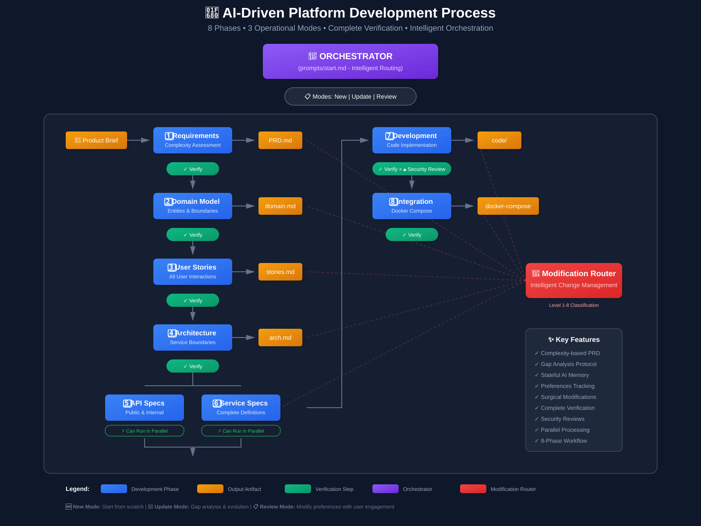

What an AI developer did — planning, coding, testing, reviewing itself — from a single instruction.
Before we write any code · architecture & design
Shapes are the components. Lines are the dependencies — and the direction of the lines decides how hard every future change will be.
Why it matters more than ever
LLMs run out of context · humans run out of working memory · same cure: the shape
Nothing here is new — what works for the LLM was always the best choice for humans too. AI just made the bill immediate.
And where do the specs come from? · solved last year
A separate project — #spec-to-pr — already turns product requirements into exactly this: FE & BE architecture, service specs, their requirements, every detail. Today’s story starts where it ends.
the story → blog.zamani.me · “Building LLM developers”
The entire human input
The rule it worked under
The specs are the asset.
The code is disposable.
12 documents defined what Feedler must do. The AI decided how — free to delete the code and regenerate it, better, from the spec alone.
How a human drives it
No dashboards, no side-doors, no slash-commands. The command names the intent; start.md decides what to do with it.
The asset · plain files in a repo
Change what Feedler is here. The code is grown from it — then thrown away and regrown, better.
One line → a working app
develop-loop · a loop by design
Designing loops for AI development is the moment’s big idea — here it’s the default, and the name says it.
exit only when converged · a spec change stops it for you
What one command set in motion
Step 06 · it reviewed its own build
The output · real export from the running app
Every item carries two links — the original source, and a jump straight back into the reader. Self-describing, in your timezone.
The reader that came out
up --build to run · down -v to erase.Built autonomously from a written spec — the specs are the asset; the code is regenerable.